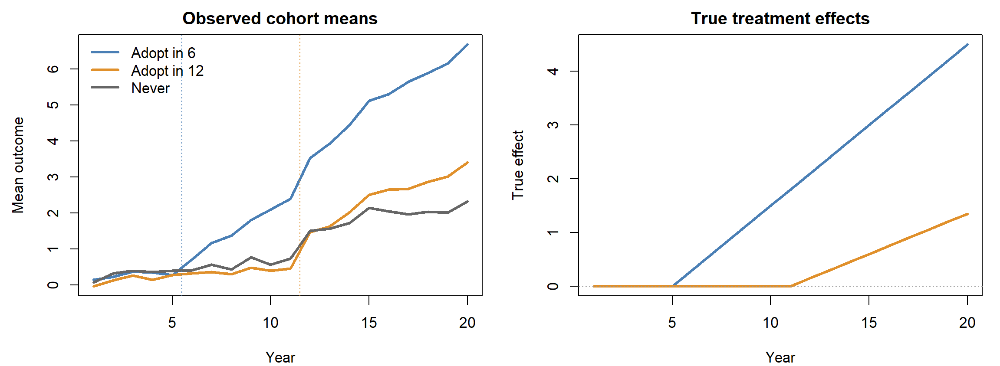
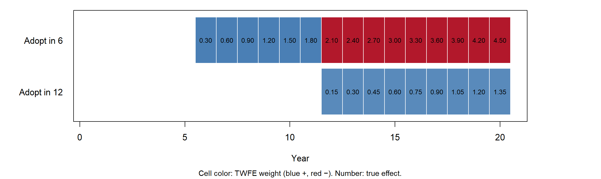
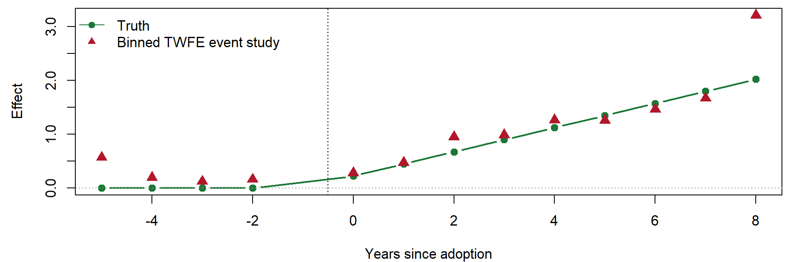
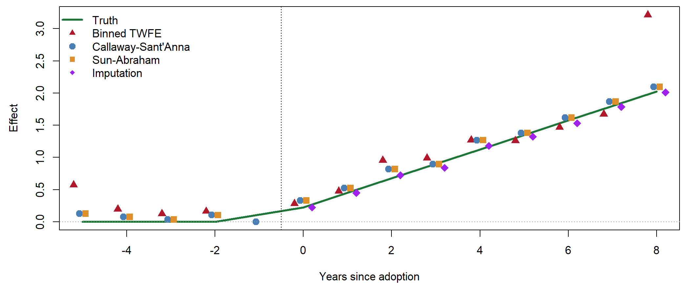
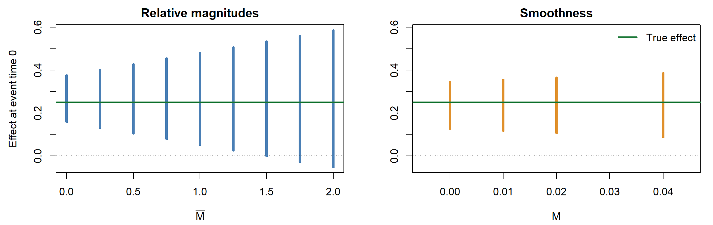

Sensitivity analysis for parallel trends: pre-tests, equivalence tests, and Rambachan–Roth
Learning objectives
State the DiD estimand and the assumptions that identify it, in potential-outcomes notation.
Explain why TWFE recovers the DiD in the 2×2 case and why that equivalence does not extend to staggered adoption.
Use the Goodman-Bacon decomposition to identify which comparisons a TWFE estimate uses, and explain why the “later vs. earlier” comparison is forbidden.
Compute the de Chaisemartin–D’Haultfœuille weights and say which treated cells receive negative weight.
Describe the common logic of modern estimators (estimate \(\text{ATT}(g,t)\) from clean comparisons, then aggregate) and the differences among them.
Explain why passing a pre-trend test is weak evidence for parallel trends, and conduct a Rambachan–Roth sensitivity analysis.
Part I: DiD refresher
The canonical 2×2 design
Two groups, two periods.
\(D_i \in \{0, 1\}\): unit \(i\) is in the treated group.
\(t \in \{0, 1\}\): treatment occurs between period 0 and period 1.
\(E[Y_{i1}(1) \mid D_i=1]\) is observed. \(E[Y_{i1}(0) \mid D_i = 1]\), what the treated group would have experienced without treatment, is not. DiD is a strategy for imputing it.
Two identifying assumptions
Parallel trends. Absent treatment, the two groups would have experienced the same average change:
The control group’s change stands in for the treated group’s counterfactual change. Nothing is assumed about levels.
The 2×2 as a missing-data problem
Period 0
Period 1
Treated (\(D=1\))
\(E[Y_0(0) \mid D=1]\)observed (no anticipation)
\(E[Y_1(1) \mid D=1]\)observed
Treated, counterfactual
\(E[Y_0(0) \mid D=1]\)observed
\(E[Y_1(0) \mid D=1]\)imputed: period 0 + control change
Control (\(D=0\))
\(E[Y_0(0) \mid D=0]\)observed
\(E[Y_1(0) \mid D=0]\)observed
The single unobserved cell is filled by adding the control group’s change to the treated group’s baseline.
Every staggered-adoption estimator we discuss today does the same thing for many cells at once. The estimators differ in which observed changes they use to fill each cell.
What parallel trends is, and is not
It is an assumption about untreated potential outcomes only. It says nothing about how treatment effects evolve.
It is not implied by, and does not imply, balance in levels. Groups may differ permanently in their average outcomes.
It is scale dependent. Parallel trends in \(Y\) and in \(\log Y\) cannot generally both hold (Roth and Sant’Anna 2023).
It may hold only conditionally on covariates \(X\): \(E[\Delta Y(0) \mid D=1, X] = E[\Delta Y(0) \mid D=0, X]\). Estimation then requires outcome regression, weighting, or both (Sant’Anna and Zhao 2020).
With more than two periods, it is partly checkable. Differential trends before treatment are evidence against it. Their absence is not evidence for it after treatment (Part V).
Regression implementation in the 2×2
The DiD estimate is the coefficient \(\beta\) in either of two equivalent regressions:
The second form, with unit and period fixed effects, is the two-way fixed effects specification. In the 2×2 case, \(\hat\beta\) is numerically identical to the difference in mean changes.
This equivalence is the origin of the practice we examine next.
Part II: TWFE as the default
The natural generalization
With many units, many periods, and treatment that switches on at different times, applied work has typically estimated
Leads (\(\ell < 0\)) serve as placebo tests; lags (\(\ell \geq 0\)) trace the dynamic effect.
Why TWFE seemed sufficient
The specification was not adopted carelessly. Three arguments supported it.
It reduces to DiD in the canonical case. Unit effects remove time-invariant confounding; period effects remove common shocks.
It is correct under a constant effect. If \(Y_{it}(1) - Y_{it}(0) = \beta\) for all \(i, t\), the TWFE estimator is consistent under parallel trends.
It is convenient. It accommodates unbalanced panels, covariates, continuous treatments, and clustered standard errors in a single regression.
The problem lies in argument 2. Treatment effects are rarely constant across adoption cohorts or over time since adoption, and TWFE’s behavior under heterogeneity was not well understood until roughly 2018–2021.
Staggered adoption: notation
Periods \(t = 1, \dots, T\). Treatment is absorbing: once on, it stays on.
\(G_i\): the period in which unit \(i\) is first treated. Units with the same \(G_i\) form a cohort. \(G_i = \infty\) for never-treated units.
\(Y_{it}(g)\): potential outcome in period \(t\) if first treated in period \(g\). \(Y_{it}(\infty)\) is the never-treated outcome.
The building block is the group-time average treatment effect (Callaway and Sant’Anna 2021):
The effect of adopting in period \(g\), evaluated in period \(t\), for units that adopted in \(g\). Any summary effect, whether overall, by cohort, or by event time \(e = t - g\), is a weighted average of these.
Assumptions under staggered adoption
Parallel trends (never-treated version). For all \(g\) and \(t \geq 2\),
Parallel trends and no anticipation hold by construction. The only complication is that effects grow with exposure and differ across cohorts.
The simulated data

Part III: How TWFE fails
TWFE in the simulation
twfe <-feols(Y ~ D | unit + year, data = panel, cluster =~unit)c(TWFE =unname(coef(twfe)), true_ATT =mean(panel$tau[panel$D ==1]))
TWFE true_ATT
0.78496 1.78125
TWFE recovers less than half the true average effect. Every unit-period effect in the data is nonnegative, parallel trends holds exactly, and there is no confounding. The bias comes entirely from how the regression combines comparisons.
The Goodman-Bacon decomposition
Goodman-Bacon (2021) shows that, in a balanced panel with staggered adoption, the TWFE estimate is a weighted average of every possible 2×2 DiD between timing groups:
Treated vs. never treated (\(kU\)): a clean comparison.
Earlier vs. later treated: cohort \(k\) switches on while cohort \(\ell\) is not yet treated. A clean comparison.
Later vs. earlier treated: cohort \(\ell\) switches on while the already-treated cohort \(k\) serves as the control. This is the forbidden comparison.
Weights \(s \geq 0\) sum to one and are proportional to subsample size × within-pair treatment variance \(\bar D(1 - \bar D)\), so cohorts treated mid-panel get the most weight.
Why the forbidden comparison is forbidden
Let cohort \(k\) adopt before cohort \(\ell\). Take the window after \(k\) adopts. “Mid” is the span when only \(k\) is treated; “post” is the span after \(\ell\) also adopts. The 2×2 is
\[
\underbrace{\text{ATT}_\ell(\text{post})}_{\text{what we want}} \;-\; \underbrace{\big[\text{ATT}_k(\text{post}) - \text{ATT}_k(\text{mid})\big]}_{\text{change in } k\text{'s effect}}.
\]
The control group is itself treated, so its change in treatment effect is subtracted out. If effects grow over time, this comparison is biased downward, and it can be negative even when every effect is positive.
The probability limit
Goodman-Bacon (2021) writes the limit of TWFE as three terms:
VWATT: a variance-weighted average of cohort ATTs. Weights are positive, but they are not proportional to sample shares, so this is not the ATT.
VWCT: a variance-weighted sum of differences in counterfactual trends. It is zero under parallel trends.
\(\Delta\)ATT: a weighted sum of changes in treatment effects within already-treated cohorts. It is zero only if effects are constant over time.
Even with parallel trends, then, TWFE estimates a non-standard weighted average of effects, minus a bias term that grows with treatment-effect dynamics.
type estimate weight
2 Later vs Earlier Treated -2.086853 0.8
3 Earlier vs Later Treated 3.019010 0.2
The forbidden comparison carries 80% of the weight and is negative, so TWFE reports a negative effect of a treatment that helps every unit in every period.
A second lens: negative weights
de Chaisemartin and D’Haultfœuille (2020) express TWFE directly as a weighted average of unit-period effects. Under parallel trends,
where \(\hat\varepsilon_{it}\) is the residual from regressing \(D_{it}\) on unit and period fixed effects.
The weights sum to one, but nothing forces them to be positive.
\(\hat\varepsilon_{it} < 0\) when a treated cell’s fitted value from the fixed effects exceeds one. This happens for units treated for many periods, in periods when most units are treated.
With negative weights, \(\hat\beta\) can lie outside the range of the \(\tau_{it}\). It need not satisfy sign preservation: every \(\tau_{it} > 0\) does not guarantee \(\beta > 0\).
Computing the weights
r <-resid(feols(D ~1| unit + year, data = panel))panel$w <-ifelse(panel$D ==1, r /sum(r[panel$D ==1]), 0)c(n_treated_cells =sum(panel$D), n_negative =sum(panel$w <0),sum_negative =round(sum(panel$w[panel$w <0]), 3),weighted_tau =round(sum(panel$w * panel$tau), 3), TWFE =round(unname(coef(twfe)), 3))
Weighting the true effects by \(w_{it}\) reproduces the TWFE estimate up to sampling noise. The largest effects, those of the early cohort late in the panel, are exactly the cells that receive negative weight.
Where the negative weights fall

The red cells hold the largest true effects. TWFE subtracts them.
Dynamic specifications are not immune
One response is to estimate the event-study version with leads and lags. Sun and Abraham (2021) show that this does not solve the problem.
Under heterogeneity across cohorts, the TWFE coefficient on relative period \(\ell\) is
\[
\beta_\ell = \underbrace{\sum_g \omega^{\ell}_{g,\ell}\, \text{CATT}_{g,\ell}}_{\text{own period}} \;+\; \underbrace{\sum_{\ell' \neq \ell} \sum_g \omega^{\ell}_{g,\ell'}\, \text{CATT}_{g,\ell'}}_{\text{contamination from other periods}}
\]
where \(\text{CATT}_{g,\ell}\) is the effect for cohort \(g\) at \(\ell\) periods since adoption.
The contamination weights sum to zero across \(g\), so they vanish only if effect paths are identical across cohorts.
Binning distant periods or dropping some relative periods adds a further contamination term from the excluded periods.
Pre-period coefficients can be nonzero even when parallel trends holds, because post-treatment heterogeneity contaminates them.
Dynamic TWFE in the simulation
panel$rel <-ifelse(panel$G ==0, -1, pmin(pmax(panel$e, -5), 8)) # bin endpointses_twfe <-feols(Y ~i(rel, ref =-1) | unit + year, data = panel)truth <-c(setNames(rep(0, 4), -5:-2),tapply(panel$tau[panel$D ==1], panel$e[panel$D ==1], mean)[as.character(0:8)])

The binned endpoints absorb the long-run effects of the early cohort, which produces a spurious lead at \(-5\) and an inflated lag at \(8\). Intermediate coefficients are also contaminated, though less visibly here.
When TWFE is fine, and how to check
TWFE is reliable when either condition holds:
No staggering. All treated units adopt at once (the 2×2 or a single event), or
Homogeneous effects. Effects are constant across cohorts and over exposure time, or at least uncorrelated with the weights.
The second is a substantive claim, rarely credible for policies whose effects accumulate.
Diagnostics that apply to any TWFE estimate:
bacondecomp::bacon(): the share of weight on forbidden comparisons, and how their estimates differ from the clean ones.
TwoWayFEWeights::twowayfeweights(): the number and total mass of negative weights, and the degree of heterogeneity needed to reverse the sign.
Chiu, Lan, Liu, and Xu (2023) apply these diagnostics to a large set of published political science panel studies and find that reported TWFE estimates often change once heterogeneity-robust estimators are used.
Part IV: Modern estimators
The common principle
Every modern estimator follows the same two steps.
Identification. Estimate each \(\text{ATT}(g,t)\), or the corresponding unit-period effect, using only clean comparisons: comparison units that are untreated in both periods being differenced. Already-treated units never serve as controls.
Aggregation. Combine the cell-level estimates into the summary the researcher wants, using explicit, nonnegative weights.
The estimators differ in which comparison units they use, how many pre-periods they rely on, and how they handle covariates. These are choices about identifying assumptions as much as about efficiency.
Callaway and Sant’Anna (2021)
Each \(\text{ATT}(g,t)\) is a 2×2 DiD between cohort \(g\) and a clean comparison group, using period \(g-1\) as the base:
where \(C\) is either the never-treated (\(G = \infty\)) or the not-yet-treated (\(G > t\)).
Covariates. Conditional parallel trends is handled by outcome regression, inverse probability weighting, or the doubly robust combination (Sant’Anna and Zhao 2020). This connects directly to Lectures 3–4.
Aggregation. It reports overall (simple), by cohort (group), by calendar time (calendar), or by event time (dynamic).
Assumptions used. Parallel trends is needed only between \(g-1\) and \(t\). Other pre-periods are not used to identify post-treatment effects.
Inference. It uses a multiplier bootstrap with simultaneous confidence bands across \((g,t)\).
The did package codes never-treated units as G = 0.
base_period = "universal" compares every period to \(g - 1\), which makes pre-period estimates comparable to TWFE event-study leads. The default ("varying") uses \(t-1\) for pre-periods, so pre-period and post-period estimates are short and long differences, respectively (Roth 2024).
Sun and Abraham (2021)
Sun and Abraham propose an interaction-weighted estimator: a TWFE regression saturated in cohort × relative-time indicators, with a clean comparison group.
Each \(\hat\delta_{g\ell}\) estimates \(\text{CATT}_{g,\ell}\) without contamination, because the regression no longer forces cohorts to share coefficients.
Event-time effects are averages of \(\hat\delta_{g\ell}\) weighted by each cohort’s share among units observed at \(\ell\).
The comparison group is the never-treated or, if none exist, the last-treated cohort, whose post-adoption periods are dropped.
With a never-treated control and a universal base period, the estimates coincide with Callaway–Sant’Anna without covariates.
Sun–Abraham in R
panel$G_sa <-ifelse(panel$G ==0, 10000, panel$G) # never treated: far-future cohortsa <-feols(Y ~sunab(G_sa, year, ref.p =-1) | unit + year, data = panel, cluster =~unit)summary(sa, agg ="ATT")$coeftable
Estimate Std. Error t value Pr(>|t|)
ATT 1.8538 0.05505163 33.67385 9.36457e-104
attr(,"type")
[1] "Clustered (unit)"
fixest::sunab() runs the saturated regression and returns event-time aggregates by default. agg = "ATT" averages all post-treatment cells, weighted by the number of observations in each.
Imputation: Borusyak, Jaravel, and Spiess (2024)
The imputation estimator takes the missing-data framing of Part I literally.
Fit \(Y_{it} = \alpha_i + \lambda_t + \varepsilon_{it}\) using only untreated observations (\(D_{it} = 0\)).
Impute \(\hat Y_{it}(0) = \hat\alpha_i + \hat\lambda_t\) for every treated observation.
Estimate \(\hat\tau_{it} = Y_{it} - \hat Y_{it}(0)\) and average with any chosen weights.
Gardner (2021, “two-stage DiD”) and Liu, Wang, and Xu (2024, “FEct”) propose closely related estimators. Wooldridge (2021) reaches the same estimator through a fully saturated TWFE regression.
Under homoskedastic, serially uncorrelated errors, imputation is the efficient estimator.
The cost is a stronger assumption. Imputation uses all pre-periods to estimate \(\alpha_i\), so it requires parallel trends over the entire panel, not only from \(g-1\) onward.
Liu, Wang, and Xu extend it to interactive fixed effects and matrix completion (relaxing parallel trends to a factor structure) and allow treatment to switch off.
The point estimate requires only two lines of code. Valid standard errors do not: the imputed \(\hat Y(0)\) carries estimation error, and didimputation (BJS) and did2s (Gardner) implement the appropriate variance estimators.
Other estimators you will encounter
Stacked regressions (Cengiz, Dube, Lindner, and Zipperer 2019). Build a separate dataset for each adoption event, containing the treated cohort and clean controls within a fixed window, then stack and estimate with event-specific fixed effects. This approach is transparent, but the implicit weights across events require care.
de Chaisemartin and D’Haultfœuille (\(\text{DID}_M\), DIDmultiplegtDYN). It compares switchers to stayers in adjacent periods. It accommodates treatments that switch on and off, as well as non-binary treatments.
Local projections DiD (Dube, Girardi, Jordà, and Taylor 2023). Each horizon is a separate regression of \(Y_{i,t+h} - Y_{i,t-1}\) on adoption, with the sample restricted to clean controls.
Continuous or multivalued treatments (Callaway, Goodman-Bacon, and Sant’Anna 2024). The negative-weighting problems reappear in dose comparisons, and dose-response interpretations require stronger parallel-trends conditions.
Factorial DiD (Xu, Zhao, and Ding 2024). This applies when a second factor, rather than treatment itself, varies across units.
Comparison
Estimator
Comparison units
Parallel trends required
Treatment reversal
R
TWFE
All, including already treated
All periods, plus homogeneous effects
Yes (but biased)
fixest::feols
Callaway–Sant’Anna
Never- or not-yet-treated
From \(g-1\) to \(t\)
No
did
Sun–Abraham
Never- or last-treated
All periods
No
fixest::sunab
Imputation (BJS, Gardner, FEct)
All untreated observations
All periods, including all pre-periods
FEct: yes
didimputation, did2s, fect
Stacked
Clean controls in window
Within event window
No
by hand
de Chaisemartin–D’Haultfœuille
Stayers in adjacent periods
Adjacent periods
Yes
DIDmultiplegtDYN
In practice, these estimators usually agree closely with one another and disagree with TWFE. Disagreement among them is itself informative: it typically signals that parallel trends holds over some windows but not others.
estimator ATT
1 Truth 1.781
2 TWFE 0.785
3 Callaway-Sant'Anna 1.854
4 Sun-Abraham 1.854
5 Imputation 1.776
All estimators in the simulation: event study

The three robust estimators track the truth and one another. Standard errors are omitted for legibility.
Choices the robust estimators still require
The modern estimators remove the mechanical bias. They do not remove the need for judgment.
Comparison group. Never-treated units may differ systematically from adopters (why did they never adopt?). Not-yet-treated units are more similar but may anticipate treatment. The choice changes the parallel-trends assumption, not merely the precision.
Aggregation. The overall ATT weights cohorts by size and periods by availability. Event-time effects at long horizons are identified only from early cohorts, so a rising event-study path may reflect composition rather than dynamics. A balanced event window (balance_e in aggte) removes the composition change.
Pre-periods. Imputation uses every pre-period, and Callaway–Sant’Anna uses one. When the two disagree, the difference is evidence about where parallel trends holds.
Event-study plots are not interchangeable (Roth 2024). Pre-period estimates from Callaway–Sant’Anna (default), Sun–Abraham, and imputation answer different questions. Compare plots only with a common base period.
Part V: Sensitivity analysis
The conventional check, and its limits
Standard practice: estimate leads, find them individually or jointly insignificant, and conclude that parallel trends holds.
Roth (2022) identifies two problems with this practice.
Low power. Pre-tests often fail to detect violations large enough to produce bias comparable in size to the estimated effect.
Pre-test bias. Conditioning on passing selects samples in which the pre-period noise happened to offset the trend. Because event-study coefficients share a reference period, that selection amplifies the bias in post-period estimates.
Parallel trends after treatment is fundamentally untestable. Pre-period data constrain it only through an assumption about how pre- and post-period violations relate.
A violation that produces bias of 0.03 in the first post-period passes the pre-test in about 67% of samples. Among those samples, the bias is larger than in the full set of samples.
Flipping the null: equivalence tests
The pre-test above treats “no difference” as the null, so a noisy design passes easily. Hartman and Hidalgo (2018) propose reversing the burden of proof.
Null: the pre-period differences are large, \(|\delta_{\text{pre}}| \geq \epsilon\).
Alternative: they are small, \(|\delta_{\text{pre}}| < \epsilon\).
Two one-sided tests (TOST) reject only when the confidence interval lies inside \((-\epsilon, \epsilon)\).
An imprecise design now fails to establish parallel pre-trends instead of passing by default. The researcher must state \(\epsilon\), the largest violation considered substantively negligible, which makes the assumption explicit. Liu, Wang, and Xu (2024) implement equivalence tests for pre-treatment fit in fect.
The limit is the same as before: even a successful equivalence test speaks to the pre-period, not to the post-period.
Rambachan and Roth (2023): the idea
Write each event-study coefficient as effect plus bias:
\[
\beta_\ell = \tau_\ell + \delta_\ell, \qquad \delta_\ell = \text{differential trend in } Y(0) \text{ at } \ell .
\]
For \(\ell < 0\), \(\tau_\ell = 0\), so \(\beta_{\text{pre}}\) estimates \(\delta_{\text{pre}}\). For \(\ell \geq 0\), \(\delta_{\text{post}}\) is unobserved.
Rather than assume \(\delta_{\text{post}} = 0\), assume \(\delta \in \Delta\), a set of restrictions that link post-period violations to pre-period violations. The result is an identified set for \(\tau_{\text{post}}\), in the sense of Lecture 7, together with a confidence set that is valid uniformly over \(\Delta\).
Reporting proceeds by varying the size of \(\Delta\) and finding the breakdown value: the smallest violation at which the conclusion no longer holds.
Two families of restrictions
Relative magnitudes, \(\Delta^{RM}(\bar M)\). Post-treatment violations between consecutive periods are no larger than \(\bar M\) times the largest pre-treatment violation:
The leads drift upward, and the first post-period coefficient combines the true effect, \(0.25\), with a bias of \(0.03\).
Sensitivity sets in the example
pre <-c(b3[as.character(-10:-2)], `-1`=0)m <-max(abs(diff(pre))) # largest pre-period jumps <-coef(lm(pre ~as.numeric(names(pre))))[2] # linear pre-trend slopeb0 <- b3["0"]; se0 <-se(es3)["rel::0"]Mbar <-seq(0, 2, by =0.25)rm_set <-cbind(lo = b0 - Mbar * m -1.96* se0, hi = b0 + Mbar * m +1.96* se0)M <-c(0, 0.01, 0.02, 0.04)sd_set <-cbind(lo = b0 - s - M -1.96* se0, hi = b0 - s + M +1.96* se0)
These are schematic versions that treat the pre-period coefficients as known. They are intended for intuition. HonestDiD accounts for estimation error in \(\hat\delta_{\text{pre}}\) and gives confidence sets with correct coverage.
Sensitivity plots

Relative magnitudes treat the pre-trend as noise of bounded size. The set includes zero once \(\bar M \gtrsim\) 1.5. Smoothness extrapolates the trend, so at \(M = 0\) it removes the bias and centers on the truth. The same data support different conclusions under different restrictions, which is why the restriction must be justified substantively.
Coefficients must be ordered pre then post, with the reference period omitted.
Use l_vec to target an average of post-period effects instead of the first one.
The procedure works with any event-study estimator that supplies a coefficient vector and covariance matrix, including Callaway–Sant’Anna and Sun–Abraham.
Other robustness checks
Placebo-in-time tests. Assign a fake adoption date before the true one and re-estimate. fect automates this for imputation estimators.
Leave-one-cohort-out. Check whether a single adoption cohort drives the aggregate.
Alternative comparison groups. Report never-treated and not-yet-treated estimates. Divergence points to anticipation or to selection into never adopting.
Functional form. Parallel trends in levels and in logs are different assumptions (Roth and Sant’Anna 2023). Report both when the outcome is skewed.
Inference with few treated clusters. Clustered standard errors over-reject when few clusters are treated. Wild cluster bootstrap and randomization inference perform better (MacKinnon and Webb 2016; Ferman and Pinto 2019).
Conditional parallel trends. If adoption is predicted by pre-treatment covariates, condition on them using Callaway–Sant’Anna’s doubly robust estimator, and show how much the estimate moves.
Part VI: Remarks
A workflow for staggered DiD
State the estimand. Specify which ATT and which aggregation: overall, by cohort, or by event time over a balanced window.
Describe treatment timing. Are there never-treated units? Does treatment switch off?
Diagnose TWFE if it is the published estimate: Bacon decomposition and negative weights.
Re-estimate with at least two heterogeneity-robust estimators that use different comparison groups or pre-periods.
Plot event studies with a common base period. Read the leads as diagnostics, not as tests that certify the design.
Conduct sensitivity analysis with HonestDiD, choosing the restriction that matches the threat, and report the breakdown value.
Use appropriate inference. Cluster at the level of treatment assignment, and use the bootstrap when few clusters are treated.
Problem Set 3 asks you to carry out steps 1–6 on a published TWFE study.
Summary
DiD identifies the ATT by imputing the treated group’s untreated trend from a comparison group. Parallel trends and no anticipation do the identifying work.
TWFE equals DiD in the 2×2 case. Under staggered adoption with heterogeneous effects, it averages comparisons that include already-treated controls, and its implicit weights on unit-period effects can be negative.
The failure is not a matter of confounding. It occurs even when parallel trends holds exactly, and it can reverse the sign of the estimate.
Modern estimators separate identification from aggregation. They estimate \(\text{ATT}(g,t)\) from clean comparisons and aggregate with explicit, nonnegative weights. They differ in their comparison groups and in how much of the pre-period they rely on.
Passing a pre-trend test is weak evidence. Equivalence tests and Rambachan–Roth sensitivity analysis replace a binary verdict with a statement of how large a violation the conclusion can withstand.
References
Borusyak, Jaravel, and Spiess (2024). Revisiting event-study designs: Robust and efficient estimation. Review of Economic Studies.
Callaway, Goodman-Bacon, and Sant’Anna (2024). Difference-in-differences with a continuous treatment.
Callaway and Sant’Anna (2021). Difference-in-differences with multiple time periods. Journal of Econometrics.
Cengiz, Dube, Lindner, and Zipperer (2019). The effect of minimum wages on low-wage jobs. Quarterly Journal of Economics.
Chiu, Lan, Liu, and Xu (2023). What to do (and not to do) with causal panel analysis under parallel trends.
de Chaisemartin and D’Haultfœuille (2020). Two-way fixed effects estimators with heterogeneous treatment effects. American Economic Review.
Dube, Girardi, Jordà, and Taylor (2023). A local projections approach to difference-in-differences.
Ferman and Pinto (2019). Inference in differences-in-differences with few treated groups and heteroskedasticity. Review of Economics and Statistics.
Gardner (2021). Two-stage differences in differences.
Goodman-Bacon (2021). Difference-in-differences with variation in treatment timing. Journal of Econometrics.
Hartman and Hidalgo (2018). An equivalence approach to balance and placebo tests. American Journal of Political Science.
Liu, Wang, and Xu (2024). A practical guide to counterfactual estimators for causal inference with time-series cross-sectional data. American Journal of Political Science.
References (cont.)
MacKinnon and Webb (2016). Difference-in-differences inference with few treated clusters.
Rambachan and Roth (2023). A more credible approach to parallel trends. Review of Economic Studies.
Roth (2022). Pretest with caution: Event-study estimates after testing for parallel trends. AER: Insights.
Roth (2024). Interpreting event-studies from recent difference-in-differences methods.
Roth and Sant’Anna (2023). When is parallel trends sensitive to functional form? Econometrica.
Roth, Sant’Anna, Bilinski, and Poe (2023). What’s trending in difference-in-differences? Journal of Econometrics.
Sant’Anna and Zhao (2020). Doubly robust difference-in-differences estimators. Journal of Econometrics.
Sun and Abraham (2021). Estimating dynamic treatment effects in event studies with heterogeneous treatment effects. Journal of Econometrics.
Wooldridge (2021). Two-way fixed effects, the two-way Mundlak regression, and difference-in-differences estimators.
Xu, Zhao, and Ding (2024). Factorial difference-in-differences.